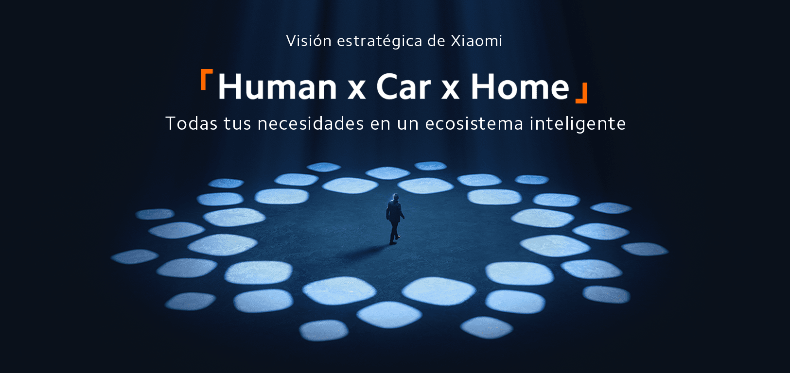

Presentació Corporativa
Xiaomi és una multinacional tecnològica xinesa fundada el 2010 que s’ha consolidat com un dels líders mundials en la fabricació de smartphones i maquinari intel·ligent. Sota la premissa “Innovation for Everyone”, la companyia democratitza l'accés a l'alta tecnologia gràcies a una política de preus altament competitius.
Aquest Pla de Transformació Digital (PTD) audita l'estratègia de l'empresa i el desplegament del seu nou ecosistema global integrat Human x Car x Home, analitzant el potencial d'HyperOS, les xarxes AIoT i la seva incursió en el sector de la automoció elèctrica.

Full de Ruta i Objectius del PTD
Contextualitzar l’evolució històrica de Xiaomi i el seu posicionament estratègic al mercat global.
Avaluar l'estat actual de la infraestructura tecnològica i detectar els seus reptes operatius.
Analitzar la convergència d'HyperOS, les xarxes distribuïdes AIoT i el mercat del vehicle elèctric.
Auditar els vectors de risc crítics en la seguretat de la informació i la privacitat de dades.
Dissenyar propostes tècniques i recomanacions per optimitzar el desplegament del pla digital.